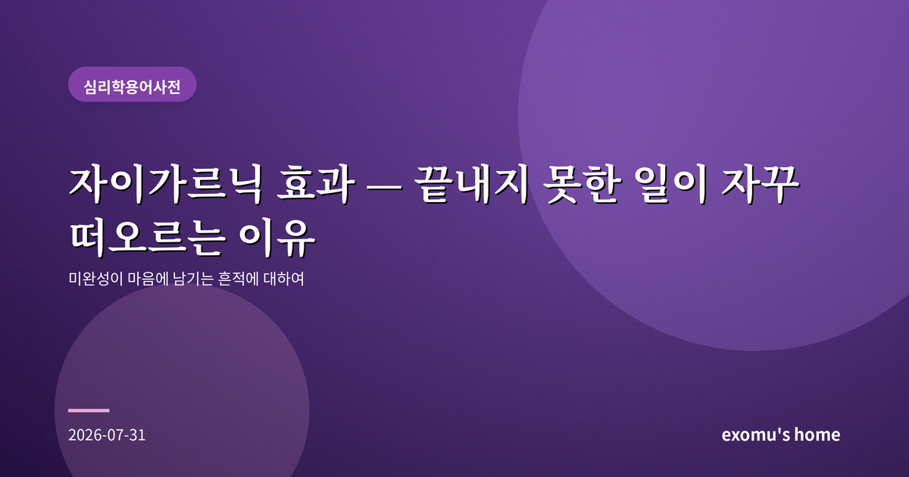
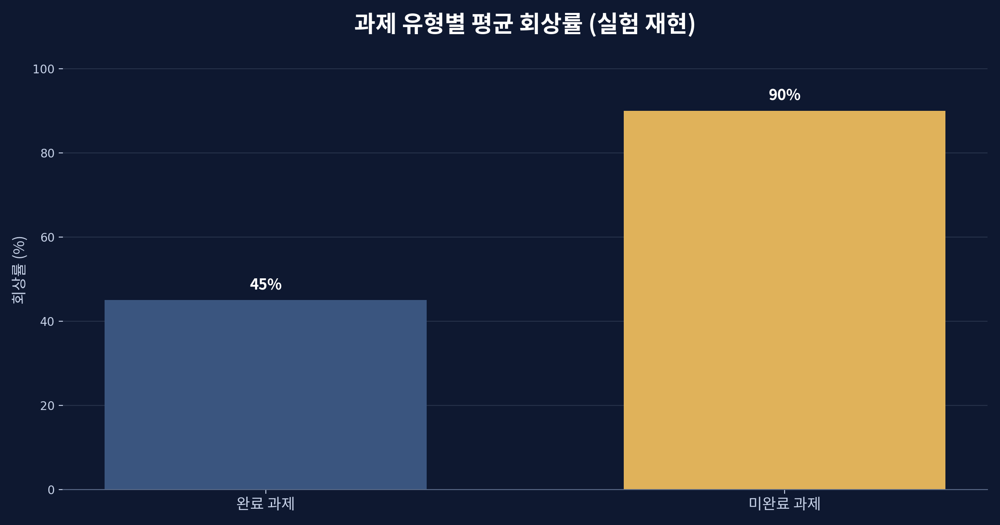
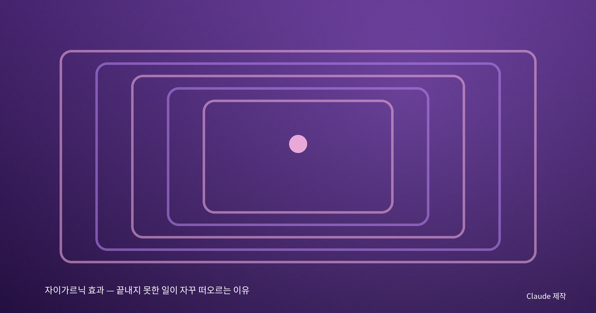
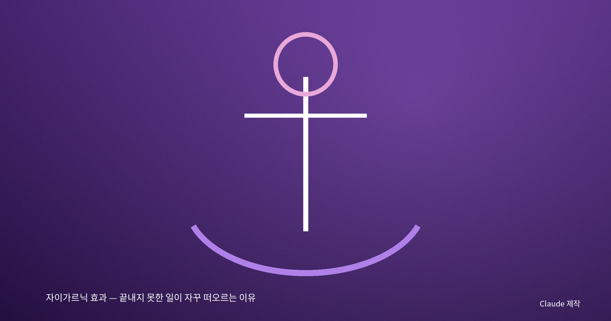
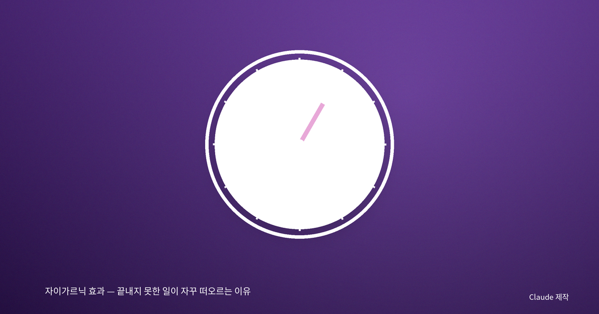

자이가르닉 효과 — 끝내지 못한 일이 자꾸 떠오르는 이유

끝난 일보다 못 끝낸 일이 기억에 남는다
퇴근길에 문득 떠오르는 것은 오늘 잘 마무리한 업무가 아니라, 답장하지 못한 메일 한 통이다. 다 본 드라마보다 중간에 끊긴 드라마가 더 오래 머릿속을 맴돈다. 이렇게 완결된 일보다 미완결된 일이 더 강하게 기억에 남는 현상을 '자이가르닉 효과'라고 부른다. 마음이 끝나지 않은 일에 일종의 꼬리표를 달아 두고, 계속 신호를 보내는 것이다.

카페에서 시작된 발견
이 효과는 1920년대, 심리학자 블루마 자이가르닉의 관찰에서 시작됐다. 그녀는 한 카페의 웨이터들이 아직 계산하지 않은 주문은 정확히 기억하면서, 계산이 끝난 주문은 금세 잊는다는 점에 주목했다. 이를 실험실로 옮겨, 사람들에게 여러 작은 과제를 주고 일부는 완성하게, 일부는 중간에 멈추게 했다. 잠시 뒤 무엇을 했는지 물었더니, 사람들은 완성한 과제보다 중단된 과제를 훨씬 더 많이 떠올렸다.
당시 심리학은 인간의 마음을 하나의 긴장 체계로 이해하는 관점과 맞닿아 있었다. 어떤 일을 시작하면 마음속에 '완결을 향한 긴장'이 생기고, 그 일을 끝내면 긴장이 풀린다. 그런데 중간에 멈추면 긴장이 해소되지 못한 채 남아, 그 미완의 과제를 계속 의식의 표면으로 밀어 올린다는 것이다.

우리를 붙드는 열린 고리
이 열린 긴장은 일상 곳곳에서 작동한다. 드라마는 결정적 순간에 회를 끊어 '다음 편'을 보게 만들고, 게임은 완료하지 못한 퀘스트 목록으로 우리를 붙든다. 광고와 콘텐츠는 이 심리를 정교하게 이용한다. 반대로 이 효과는 우리를 괴롭히기도 한다. 끝내지 못한 일들이 머릿속에서 계속 알림을 울리면, 정작 지금 해야 할 일에 집중하기 어려워진다. 심리적 에너지가 여러 개의 열린 고리에 분산되는 것이다.

미완성을 다스리는 법
다행히 이 긴장을 잠재우는 방법이 있다. 연구에 따르면, 일을 실제로 끝내지 않아도 '구체적인 계획'을 세우는 것만으로 마음은 상당 부분 안심한다. 언제 어디서 무엇을 하겠다고 적어 두면, 뇌는 그 일을 '처리 예약됨'으로 표시하고 긴장을 내려놓는다. 머릿속을 맴도는 걱정거리를 종이에 적는 것이 효과적인 이유도 여기에 있다. 열린 고리를 지금 당장 닫는 대신, 닫을 방법을 예약해 두는 것이다.

끝맺음의 기술
자이가르닉 효과는 마음의 결함이 아니라, 중요한 일을 놓치지 않게 해 주는 오래된 장치다. 다만 현대인은 동시에 너무 많은 일을 열어 두고 살기에, 이 장치가 과부하에 걸리기 쉽다. 그래서 필요한 것은 의도적인 끝맺음이다. 큰일을 작은 단위로 쪼개 하나씩 완결하고, 오늘 못 다 한 일은 내일의 계획으로 명확히 넘겨 두는 것. 그렇게 열린 고리를 하나씩 정리할 때, 우리는 비로소 지금 이 순간에 온전히 머무를 수 있다.